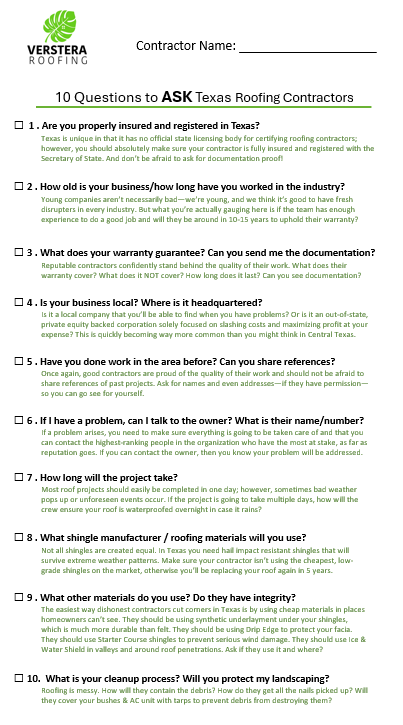

Use this checklist to:
✓ Ask Targeted Questions
✓ Identify trustworthy contractors
✓ Educate yourself to make the right decision
✓ Avoid getting scammed
10 Questions to Ask Texas Roofing Contractors
- Are you properly insured and registered in Texas? Texas is unique in that it has no official state licensing body for certifying roofing contractors; however, you should absolutely make sure your contractor is fully insured and registered with the Secretary of State. And don't be afraid to ask for documentation proof!
- How old is your business/how long have you worked in the industry? Young companies aren't necessarily bad—we're young, and we think it's good to have fresh disrupters in every industry. But what you're actually gauging here is if the team has enough experience to do a good job and will they be around in 10-15 years to uphold their warranty?
- What does your warranty guarantee? Can you send me the documentation? Reputable contractors confidently stand behind the quality of their work. What does their warranty cover? What does it NOT cover? How long does it last? Can you see documentation?
- Is your business local? Where is it headquartered? Is it a local company that you'll be able to find when you have problems? Or is it an out-of-state, private equity backed corporation solely focused on slashing costs and maximizing profit at your expense? This is quickly becoming way more common than you might think in Central Texas.
- Have you done work in the area before? Can you share references? Once again, good contractors are proud of the quality of their work and should not be afraid to share references of past projects. Ask for names and even addresses—if they have permission—so you can go see for yourself.
- If I have a problem, can I talk to the owner? What is their name/number? If a problem arises, you need to make sure everything is going to be taken care of and that you can contact the highest-ranking people in the organization who have the most at stake, as far as reputation goes. If you can contact the owner, then you know your problem will be addressed.
- How long will the project take? Most roof projects should easily be completed in one day; however, sometimes bad weather pops up or unforeseen events occur. If the project is going to take multiple days, how will the crew ensure your roof is waterproofed overnight in case it rains?
- What shingle manufacturer / roofing materials will you use? Not all shingles are created equal. In Texas you need hail impact resistant shingles that will survive extreme weather patterns. Make sure your contractor isn't using the cheapest, low-grade shingles on the market, otherwise you'll be replacing your roof again in 5 years.
- What other materials do you use? Do they have integrity? The easiest way dishonest contractors cut corners in Texas is by using cheap materials in places homeowners can't see. They should be using synthetic underlayment under your shingles, which is much more durable than felt. They should be using Drip Edge to protect your fascia. They should use Starter Course shingles to prevent serious wind damage. They should use Ice & Water Shield in valleys and around roof penetrations. Ask if they use it and where?
- What is your cleanup process? Will you protect my landscaping? Roofing is messy. How will they contain the debris? How do they get all the nails picked up? Will they cover your bushes & AC unit with tarps to prevent debris from destroying them?
